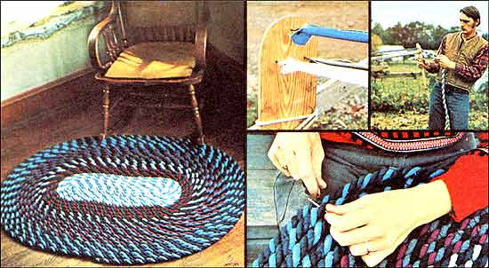

When it comes to attractive, foot-warming floor coverings, you just can't beat an old-fashioned Colonial-style throw rug. "Especially," says MOTHER staffer Travis Brock, "one that you've made yourself-for pennies-from recycled rags!"
Two months ago-as "The Incredible Rope-Making Machine" (MOTHER NO. 42, pages 36-37) was being written-MOTHER researchers Travis Brock and Dennis Burkholder came up with a right smart (we thought) idea: "Why not use the rope-maker," they suggested, "to twist ordinary rags into 'fabric ropes' that a person can-in turn-make into a Colonial-type oval rug?"
Well, we're pleased to report that the boys' idea has-in the ensuing two months-materialized into a brightly colored 3' X 4' floor covering . . . the very one, in fact, shown on this page! For all you would-be rug-makers, then, here's a quick rundown of how Travis and his wife, Linda, managed to create this lovely "rope rug" . . . with tips on how you can duplicate their success.
"The authors of the two rug-making articles in MOTHER NO. 12 both say that wool is the only suitable material for a floor covering of this sort," explains Travis, "but Linda and I happened across a large quantity of double-knit polyester and decided 'What the heck . . . let's use it.' "
First, the couple washed the approximately 30 square yards of fabric. (No one likes a dingy rug.) Then Travis and his wife [1] cut the laundered cloth into two-inch-wide strips, [2] separated the strips by color, and [3] stitched like-colored strands together with bias seams (that is, seams sewn at a diagonal). "You could butt the ends of two pieces together and sew 'em straight across," explains Linda, "but you'd end up with unsightly, hard-to-manage lumps in the finished cordage."
Next, Linda and Travis selected three color-coordinated strips of fabric of equal length (anywhere from 20 to 80 feet long) and folded them in half lengthwise. "Then," says Travis, "we got out the Incredible Rope-Making Machine, slipped the strips' folds over the machine's three hooks, and tied the rags' loose ends together behind the 'Y'-shaped separator/holder." (See Photos 2 and 3.)
At this point, Travis and Linda got on opposite sides of the rope-maker and started cranking out yard after colorful yard of thick polyester "rope". Says Travis: "I figure the two of us spent a little over an hour twisting our material into fat, tri-colored cords."
After they'd made their rags into ropes, the Brocks began coiling and lacing the many yards of cordage into an oval rug. "For lacing material," Linda remarks, "we used the heaviest black thread we could find . . . however, a strong rug yarn-or dark colored kite string-would also have worked."
Travis points out that during the lacing operation (a technique that's explained at length in MOTHER NO. 12, pages 60-66), the homespun rug's ropes are never pierced. Instead, twine is drawn between the strands of each adjacent cord. ("We found that a large-size crochet hook is a great tool to use for this," says Travis.)
Linda notes that whenever she worked her way to the end of a rope of one color pattern, she simply "sewed the end of the next rope to the end of the preceding one and continued as before."
"Since there doesn't seem to be any way to end a spiral-wound oval rug invisibly," Travis remarks, "we merely sewed the very end of the last coil of cordage to the edge of the rug and accepted the blunt finish as part of the rug's character."
Travis mentions, however, that there is one advantage to ending the rope rug this way. "Namely, it allows you to add more rope-and thus expand the rug-as you locate more makin's and feel the need to cover more floor area."
So there you have it, gang: a relatively quick and simple way-given a rope-making machine-to turn rags (if not to riches) to rugs!
|
|
 |
|